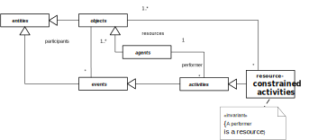

Modeling and Simulation of
Organizations and Business Processes with
DPMN
Gerd Wagner
Brandenburg University of Technology
Germany
https://dpmn.info/reading/EEWC2020.
Overview
- Setting the Scene
- Part I: Discrete Dynamic Systems
- Part II: Object-Event Modeling and Simulation (OEM&S)
- Part III: Outlook
First Things First
What's wrong with BPMN?
- A limited concept of "business process" (e.g., only human resources)
- Overloading/ambiguity of sequence flow arrows
- Insufficient integration of the objects that participate in a process
- Insufficient support of resource management
- No support of processing activities
- No convincing formal semantics
Baking a Blueberry Cake

Baking with Two Performers

A Haul Service Company

Compare with DPMN

BPM versus DES (1)
- When a BPM language allows simulation, it does have an execution semantics
- There are various proposals how to extend BPMN for BPS: Signavio, BIMP (Univ. Tartu), etc.)
- All of them result in quite limited forms of BPS:
- no conditional branching
- only human, but no other, resources
- lack of support for important resource management features (alternative resources, pre-emption)
BPM versus DES (2)
- In DES, there are many paradigms (and a lot of conceptual confusion)
- The two main paradigms are Event-Based Simulation and (higher-level) Processing Network (PN) Simulation
- There are 10+ commercial DES tools, all of them focusing on PN Simulation, but with different (proprietary) terminologies and diagram languages
- PN Simulation is a form of BPS, but it is incompatible with BPMN
What is a Discrete Dynamic System (DDS)?
A real world system consisting of objects and a discrete flow of events such that at any moment in time, the system's past is a sequence of situations each characterized by
- a time point t (the situation time)
- the system's object states O at t , and
- a set of imminent events, to occur at times greater than t.
and each situation St+1 is created from St via causal regularities triggered through the events occuring at t.
Causal Regularities
An event e@t causes:
- state changes Δ of affected objects, and
- follow-up events e1@t1, e2@t2,...
according to the dispositions of affected objects, which can be generalized as causal regularities of the form
with O being the set of the system's object states at time t, such that
is the resulting changed system state.
Modeling a DDS
Computationally, a DDS can be represented by an Object Event Model (OEM) consisting of:
object types OT, e.g., in the form of classes of an object-oriented language;
event types ET, e.g., in the form of classes of an object-oriented language;
event rules R representing causal regularities, e.g., in the form of
onEventmethods of the class that implements the triggering event type.
While OT and ET can be defined by a UML Class Diagram, the set of event rules R can be defined by a DPMN Process Diagram.
Events and Discrete Processes
- Discrete processes are governed by causal regularities, which relate events with (1) state changes of affected objects and (2) follow-up events.
- A discrete process consists of a partially ordered set of events that happen in a spatio-temporal region determined by the events' participants and the causal regularities involved.
- A business process is a discrete process that "happens in the context of an organization".
Modeling Objects and Events (1)
- Since events depend on objects, we first need to model object types and then event types.
- A process model is based on an underlying information model defining the types of its objects and events.
- A conceptual process model describes the causal regularities of a real world process.
Modeling Objects and Events (2)
- A simulation design model consists of an information design model and a process design model.
- An information design model defines object types and event types (e.g., in the form of classes in a UML Class Diagram).
- A process design model defines event rules that represent causal regularities (e.g., in a DPMN Process Diagram).
Event Graphs
Event Graphs (EGs) have been proposed for DES modeling by Schruben in 1983.
Strengths:
- EGs provide an intuitive visual modeling language.
- EGs capture the fundamental event scheduling paradigm.
Weaknesses:
- EGs lack a visual notation for (conditional and parallel) branching.
- EGs do not support OO state structure modeling (with objects/classes and attributes).
- EGs do not support activities.
An Event Graph Model

The integer variable L denotes the length of the input buffer.
The Boolean variable B denotes the busy/available status of the service desk or machine.
DPMN
...is the Discrete Event Process Modeling Notation, which extends Event Graphs by adding:
- Exclusive/Inclusive/Parallel Gateways for conditional/parallel branching
- Data Objects for replacing "state variables" (like L) with attributes (like WorkStation::inputBufferLength)
- Activities
A DPMN Process Model is composed of Event Rule Models.
Modeling Resources in an Information Model

A Resource-Constrained Activity

A Resource-Dependent Activity Start Arrow

Conclusion and Outlook
- OEM&S is a new modeling and simulation paradigm with a formal semantics and an ontological foundation.
- The preferred modeling languages for OEM&S are UML Class Diagrams and DPMN Process Diagrams.
- OES has been implemented in JavaScript, a Python implementation will follow.
- DPMN allows modeling of message-based communication (with out-message and in-message events).
- OEM&S can be extended by adding Agents with Beliefs about, and Perceptions of, their environment
- How to model (DEMO) transactions in DPMN still has to be investigated.
See also
- Gerd Wagner: An Abstract State Machine Semantics For Discrete Event Simulation, Proc. of the 2017 Winter Simulation Conference.
- Gerd Wagner: Information and Process Modeling for Simulation – Part I: Objects and Events. Journal of Simulation Engineering 1:1, 2018.
- Gerd Wagner: Information and Process Modeling for Simulation – Part II: Activities and Processing Networks. 2019.
- Available on
dpmn.info